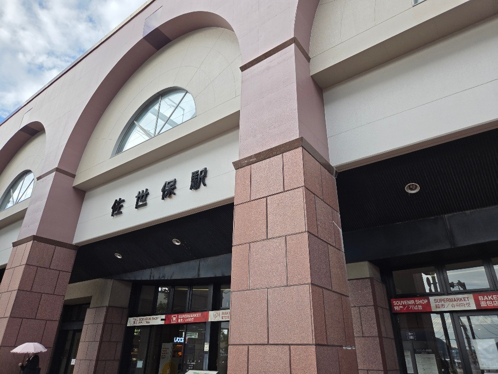

Trailcast / AT Protocol / PDS
@shino3.net · github.com/ShinoharaTa/trailcast

9/11 16:09 佐世保ついた！港！！
実際の記録「2026-09 九州」全 19 チェックポイントから抜粋 · 旅行 / 開発記録 / 謎解き参加 などに利用
SNS は共有には強い。でも、自分の履歴を辿る用途とは性質が違う。
記録する / 振り返る
共有する / 会話する
全ユーザーの記録を集約するビューを持たない
検索ランキング / おすすめ / 人気投稿 / 全体フィード を作らない
記録空間は、他人の活動によって変形しない。
「2026-09 九州」の 19 件はすべて Bluesky へクロスポスト済み。PDS 上の記録が持つのは Bluesky 投稿への参照 1 つだけ。
PDS は使う。コミュニティ空間は作らない。
共有したいものだけ、Bluesky へ。
github.com/ShinoharaTa/trailcast